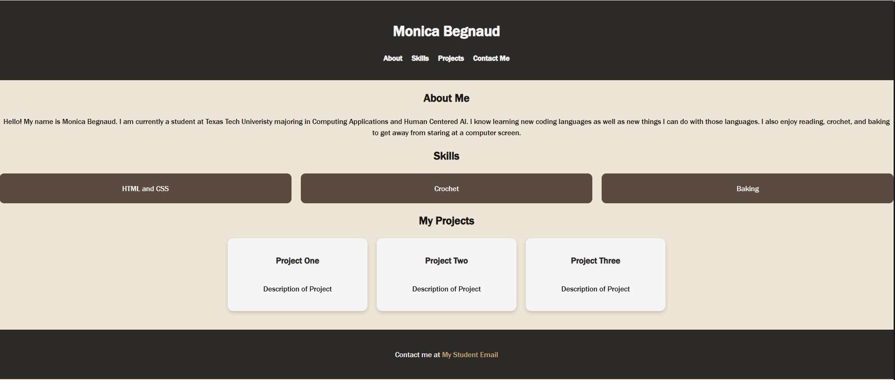
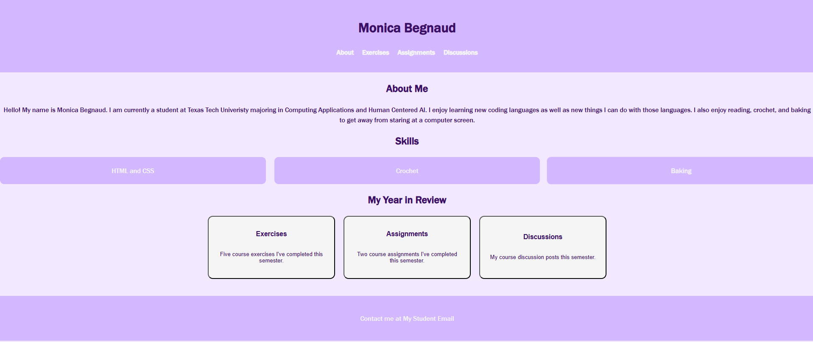
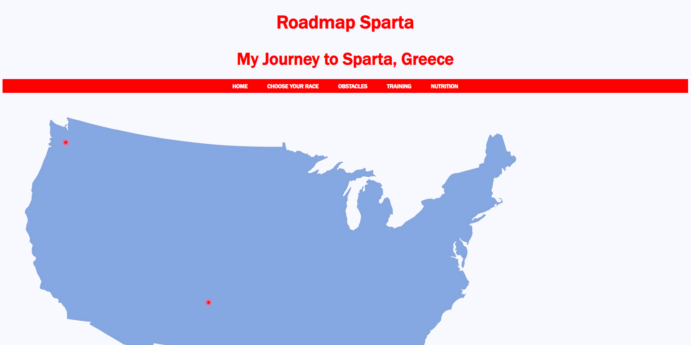

This assignment was to build a basic homepage using HTML and CSS that could be used as a personal portfolio. At this point the focus was getting more comfortable with the HTML and CSS rather than having a completed site. The page had a navigation bar but without working links, and the section headings had no content. This landing page became the foundation for the final course portfolio.

This is the final course portfolio that built on the previous landing page. I took the initial page and expanded it to include all exercises, assignments, and discussion posts that I completed throughout the course. This project was the first multi-page HTML project that was fully fleshed out instead of a prototype of what the site could be. It made me focus on consistent navigation and deliberate style choices.

This project was a first look into the project management side. I went through the process of planning a website, writing a proposal that included a risk assessment and mitigation strategies, acceptance criteria and then prototyping a blog like site that focused on Spartan Obstacle Races. The final prototype was a multi-page HTML site with CSS styling that covered topics from race selection, obstacle details, training and nutrition.
This was a semester long research project that started with learning how to find sources, the different types of sources available, and then adding strong annotations for the ones I wanted to use. I then took all of those sources and turned them into a comprehensive guide to homemade bread. My guide covers everything from the history and cultural impacts, the scientific process of the baking, and beginner friendly recipes. The final guide is hosted on Notion, which was a new platform I had to learn along with the project.
You can view my database here.
This was a semester long research project in one of my first Computing Applications classes. I choose a personal hobby, crochet, and spent 8 week researching stitches, yarn weights, techniques, and then created a GitHub repository. This was my first experience with Markdown as well as Obsidian and GitHub. In the beginning I found Obsidian to not be very user friendly, but I came out of the project with a strong understanding of all three tools.
You can view my research here.